Settings → Gateway → Social listening: TikTok (issue #1294)
Taken by web/tests/listening-accounts.spec.ts against a fake client API, desktop (Desktop Chrome) and phone (Pixel 7), light and dark (UI_CHECK, UI_THEME). Cookies are made up. The yt_dlp backend is now named "yt-dlp, keyless" (YouTube's too).
TikTok before its consent: its three backends, the account's web API first, then yt-dlp, then the web search's cards
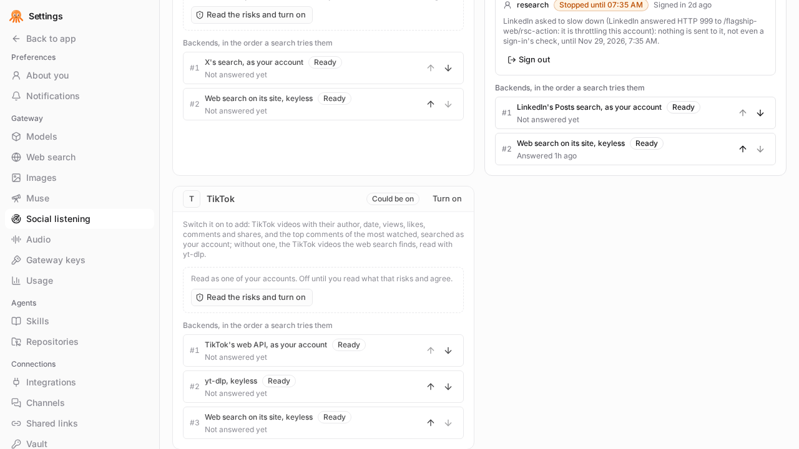
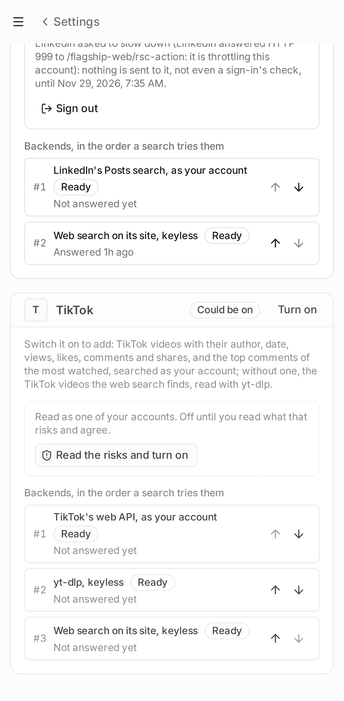
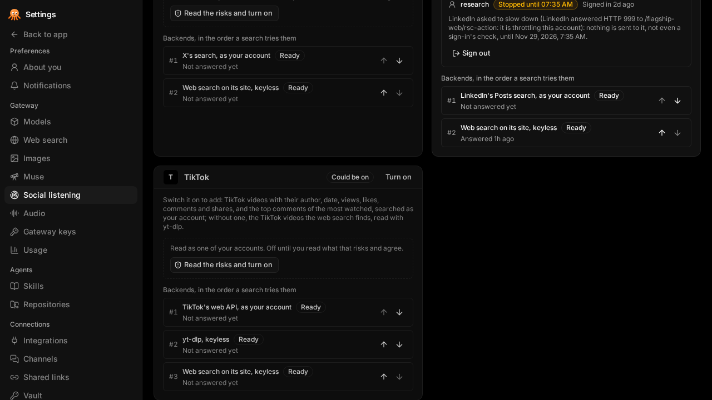
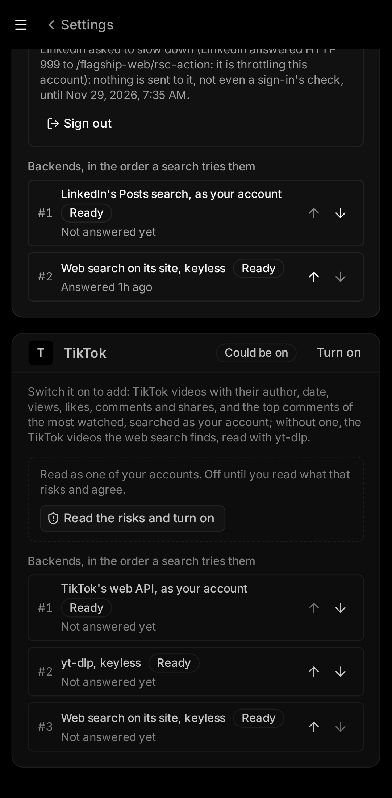
TikTok's consent card: its own risks, its 12-second pace, never solving a CAPTCHA
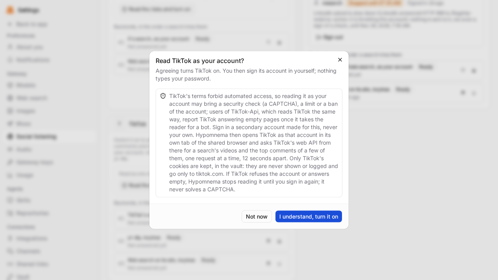
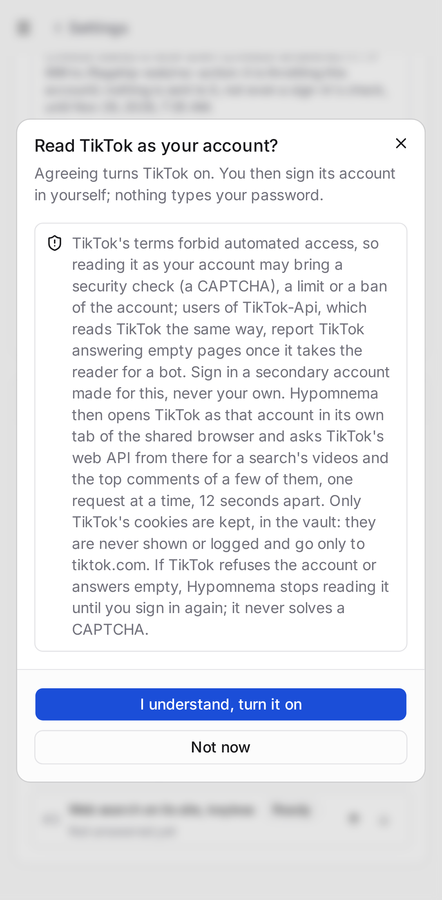
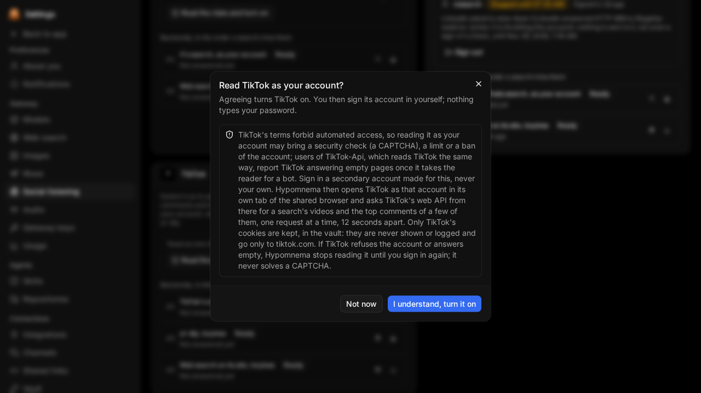
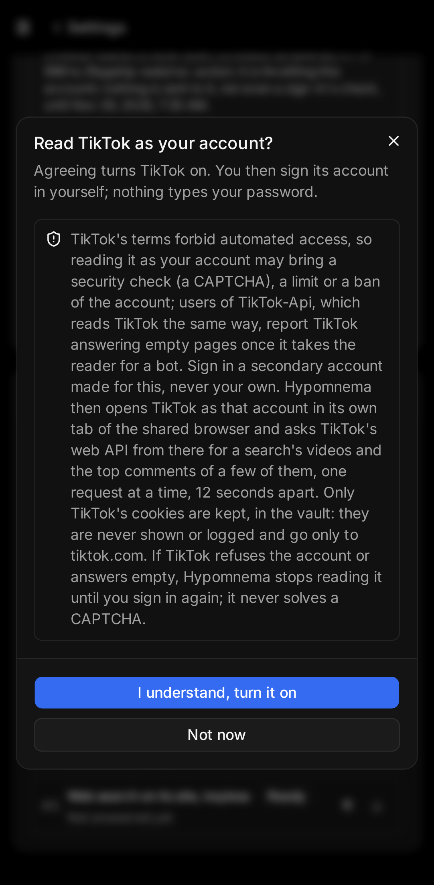
A pasted cookie header without msToken is refused, naming the missing cookie
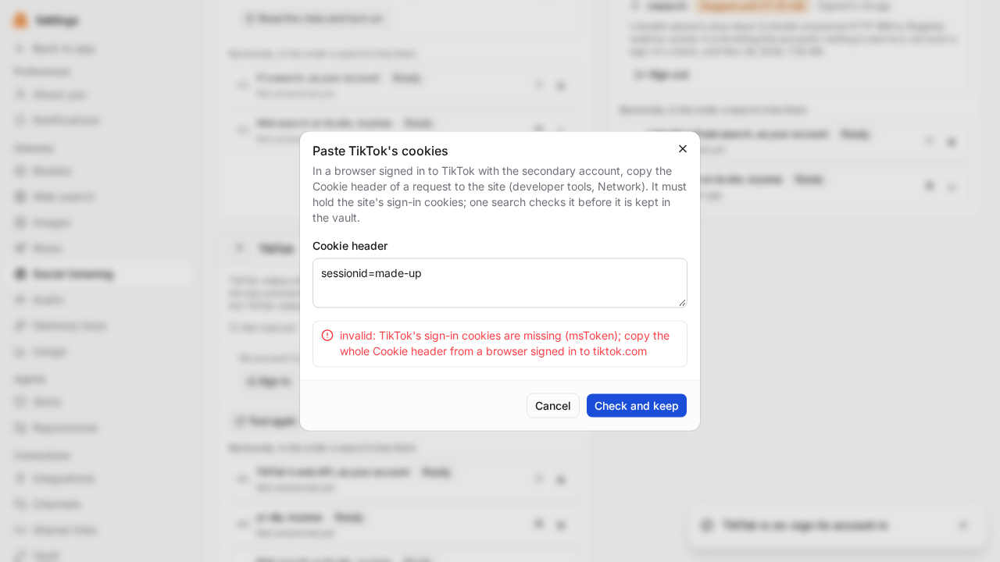
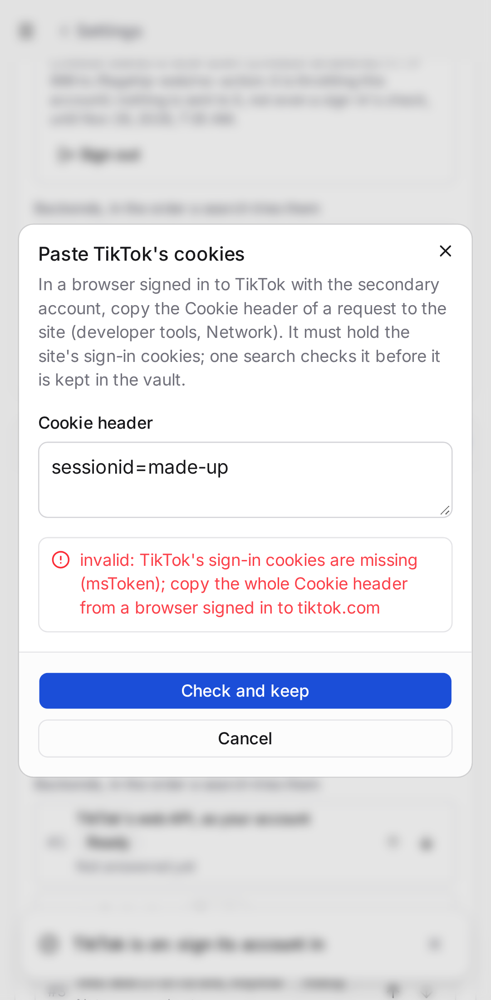
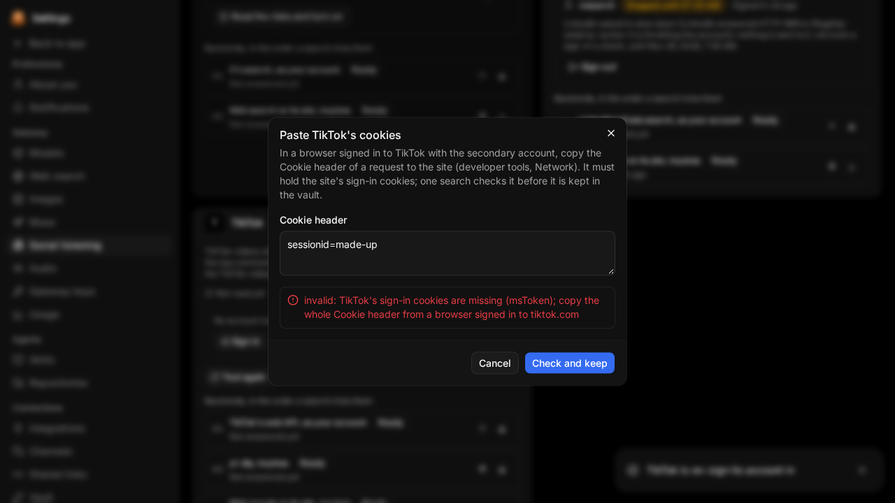
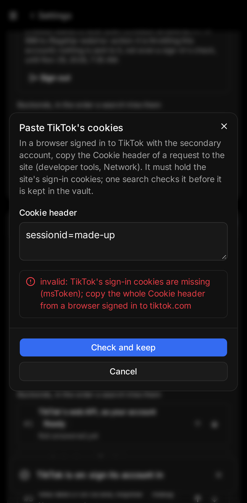